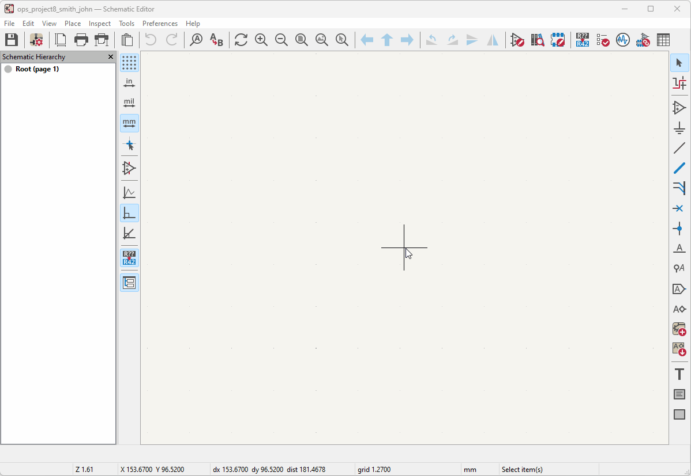
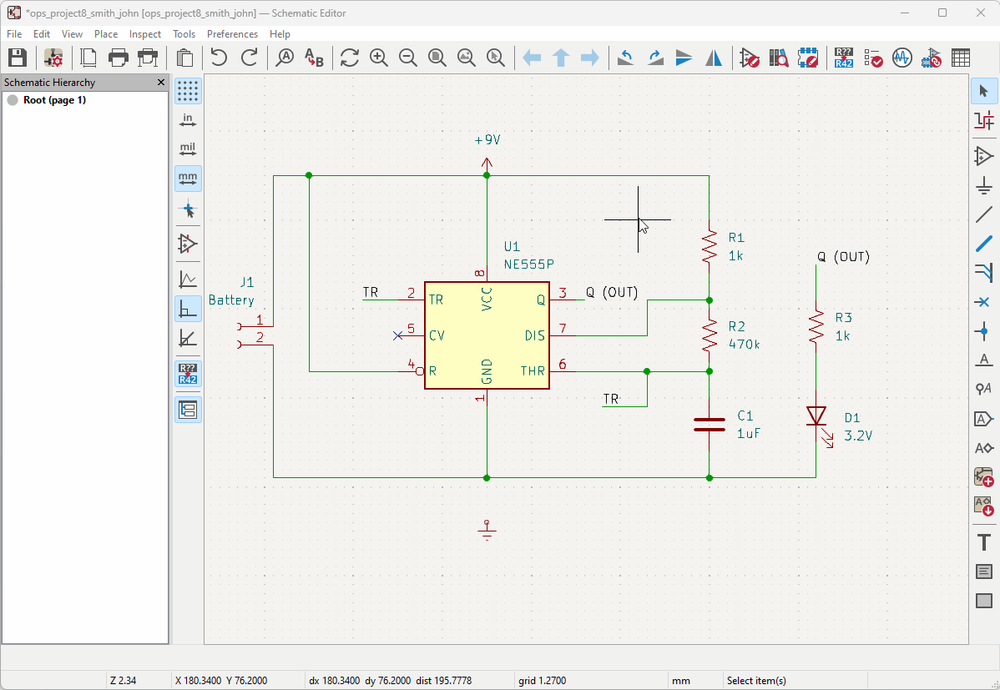
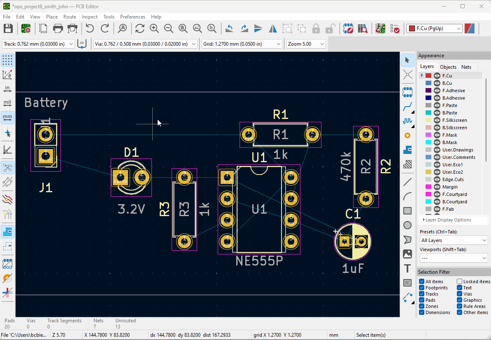
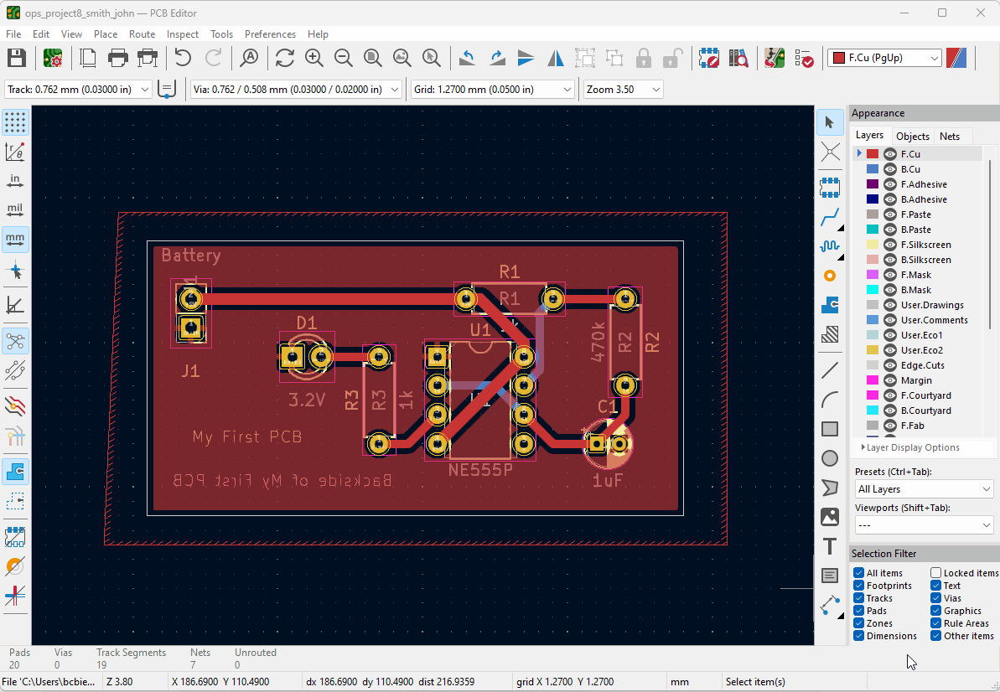

Project overview
From prototyping to a real PCB
Updated 2026.03.14
In this project you move beyond breadboards and perfboards and create a complete printed circuit board for the classic 555 blinker using KiCad 7. The objective is to capture the schematic, assign the correct footprints, lay out the PCB and generate manufacturing files.
Sustainable electronics focus: At each stage, consider power consumption, modularity, reuse, repairability, waste prevention and the environmental implications of design choices. These criteria guide discussion; their benefits must be justified rather than assumed. This workshop contributes to UAH teaching innovation project UAH/EV1812.
Recommended setup- Use a mouse whenever possible.
- Save frequently during schematic and layout work.
- Follow the checkpoints in order.

Example of PCB board.
Concepts
Printed circuit boards and design workflow
Printed Circuit Boards (PCB)
Printed circuit boards are the standard medium for compact, reliable and reproducible electronic products. They replace temporary prototyping structures with permanent copper traces, pads and footprints connected through a CAD-defined layout.
PCB design overview
The workflow has two main stages: schematic capture and PCB layout. First, the circuit is translated into a digital schematic with symbols, nets and footprints. Then the board outline is defined, footprints are placed, tracks are routed and manufacturing outputs are generated.
Software setup
Installing KiCad 7.0.11
Use KiCad 7.0.11 for this project. Download the installer for your operating system and keep the default installation settings except for optional help files if needed.
Assessment
Minimum requirements
- Create a full schematic that reproduces the provided 555 blinker circuit.
- Pass ERC except for the expected power warning.
- Create a PCB layout that passes DRC.
- Use the symbols and footprints listed in the parts section.
- Justify at least two sustainability decisions and complete the final eco-design checklist.
Sustainability in practice · UAH/EV1812
Eco-design criteria for the 555 blinker PCB
In addition to making the blinker work correctly, examine whether the board can be powered efficiently, repaired, adapted and reused. You do not need to redesign the entire reference circuit: propose and justify feasible improvements, marking optional modifications as such.
01 · Energy consumption
Identify the supply voltage, LED current-limiting resistance and approximate load current. Compare feasible LED current settings and consider battery life.
Evidence: brief estimated current or power calculation. Portable power does not automatically mean low consumption.02 · Modularity
Use an accessible, clearly labelled power connector. Consider whether a labelled pulse output or test point would allow the board to work with other experiments.
Evidence: connector/test point on the drawing or a justified proposal. Optional extension if the base circuit has no output connector.03 · Reuse
Identify a future educational use for the board, e.g. a timer or pulse source, instead of building a single-use prototype.
Evidence: a brief description of a possible future lab activity.04 · Repairability
Check that standard through-hole components are accessible and replaceable. Assess using an 8-pin socket for the NE555 if available.
Evidence: replaceable components and accessible footprint arrangement.05 · Waste and materials
Check ERC and DRC before fabrication, avoid unnecessary board revisions and choose reasonable board dimensions without compromising repairability.
Evidence: verification results and a simple explanation of board-size trade-offs.06 · Environmental awareness
Compare a new PCB with reusing an existing one. Discuss how durability, material choice, maintenance or energy demand may influence environmental impact.
Evidence: one trade-off and a justified improvement. No environmental benefit is proven without supporting data.
Additional criterion — open tools and documentation: Use KiCad to preserve editable schematic and PCB files; document components and connectors so the board can be maintained and reused by future students. Open-source design tools improve access but do not, on their own, guarantee lower environmental impact.
Components
Parts and reference selections
This is a compact version prepared for GitHub Pages. Adapt the exact values and footprints to your course requirements.
| Qty | Part | Symbol / value | Suggested footprint |
|---|
| 1 | Timer IC | NE555 | DIP-8_W7.62mm |
| 1 | LED | D1 | LED_D5.0mm |
| 2 | Resistor | R1, R2 | Axial_DIN0207 |
| 2 | Capacitor | C1, C2 | Radial / Disc_THT |
| 1 | Battery / supply connector | BT1 or J1 | TerminalBlock / BatteryHolder |
Repair and reuse: the suggested through-hole footprints can facilitate component replacement. As an optional extension, consider a DIP-8 socket and a labelled pulse test point, checking compatibility and available parts before changing the reference schematic.
Reference diagram
Schematics

Reference schematic used to build the PCB.
Use this schematic as the basis for KiCad capture. Check pin orientation, component values and supply connections before assigning footprints.
Tip: keep component values and footprint names consistent from the start to avoid ERC and PCB update problems.

Example of the PCB.
Step-by-step
Instructions and checkpoints
Follow the checkpoints below in order. Each card is larger than before so screenshots and animated guidance are easier to view on GitHub Pages.
Checkpoint 1
Create the project and capture the schematic
- Create a new KiCad project and open the schematic editor.
- Add power symbols, parts, values and footprint assignments.
- Wire the circuit, add net labels and no-connection flags.
Eco-design check · energy: note the supply voltage, LED current-limiting resistor and possible battery supply. Estimate current from the circuit and component data; do not equate battery power with energy efficiency.

Checkpoint 2
Annotate and validate the schematic
- Run schematic annotation to replace placeholder references.
- Run ERC and verify that only the expected power warning remains.
Eco-design check · reliability: verify the supply and component connections. Investigate the known power warning rather than ignoring unexpected ERC warnings; detecting errors early can prevent unnecessary board revisions.

Checkpoint 3
Create the board and route the PCB
- Open PCB Editor and update the board from the schematic.
- Set track and via sizes, define board outline and place footprints.
- Route tracks, add vias if needed, and create the ground fill.
Use 40 mil for power/ground and 30 mil for signal traces. Avoid 90° corners.
Eco-design check · modularity and repair: keep the connector and through-hole parts accessible; reserve labels or space for possible future pulse testing. Minimise board size only as far as assembly and repair remain practical.

Checkpoint 4
Run design rule checks
- Open DRC and run the checker.
- Resolve all violations before generating outputs.
Eco-design check · waste prevention: resolve electrical and layout issues before fabrication. DRC is a technical verification step, not an environmental life-cycle assessment.

Checkpoint 5
Generate manufacturing files
- Plot the fabrication layers and create drill files.
- Review the generated files before sharing or submitting them.
- Compress the project folder with the required naming format.
Eco-design check · reuse: preserve the editable .kicad_sch and .kicad_pcb files, BOM and revision notes. Consider reusing the board in future timing or digital-electronics labs.
Final activity · reflection
Eco-design self-assessment
Tick the items that you have actually checked or justified. An unchecked item does not mean failure: it may be a future improvement. This checklist stays in your browser and does not submit responses.
Reflection (2–3 sentences): Which two changes would you propose to make this specific 555 board more sustainable? What technical, cost or maintenance trade-offs might those changes involve?
Want to assess the impact of the workshop? Watch the sustainable electronics resource and complete the voluntary questionnaire. Responses are collected through Microsoft Forms, not this local checklist.